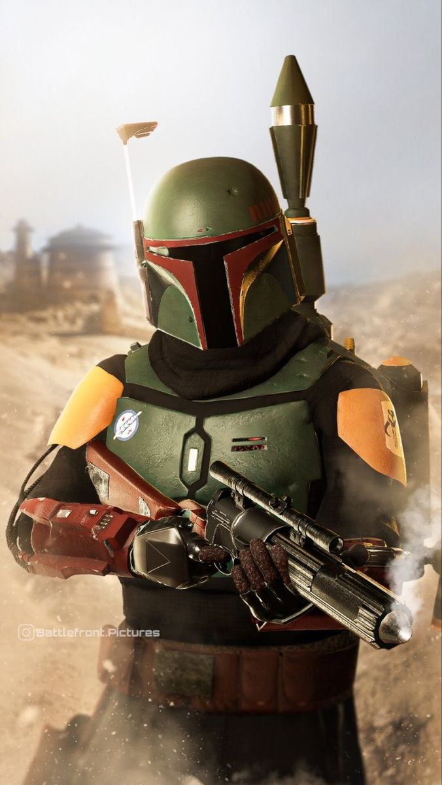
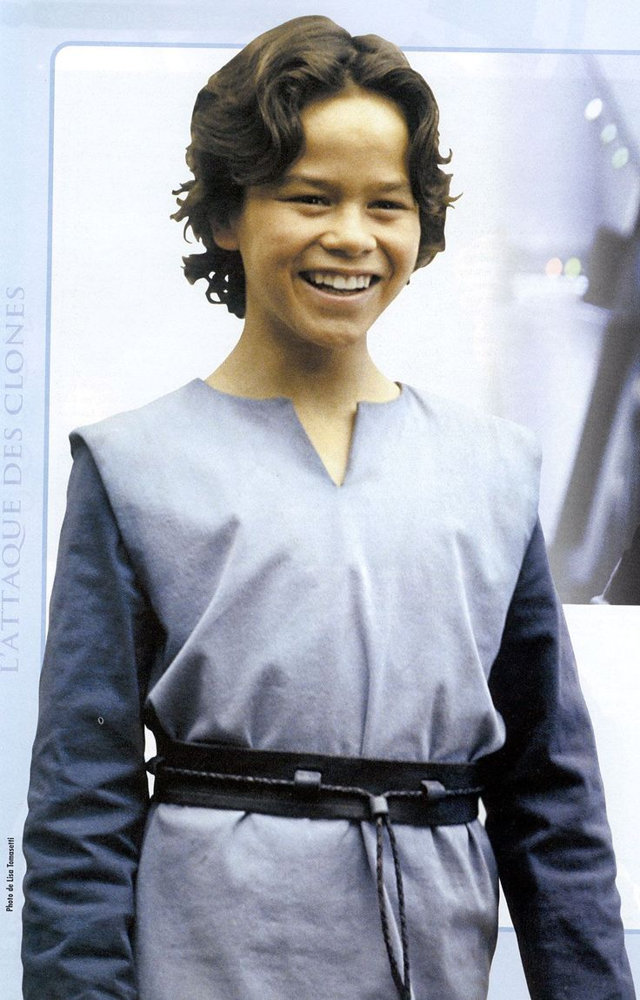

Boba Fett

{kind=link}
Boba Fett est le clone de Jango Fett qu'il a conservé auprès de lui comme son fils, parmi les milliers d'autres clones réalisés à son image sur la planète Kamino et qui vont intervenir dans l'épisode II de la saga Star Wars, l'Attaque des clones. Devenu adulte, Boba est un redoutable chasseur de primes, connu pour son talent à traquer ses proies. Il a souvent travaillé pour le gangster Jabba le Hutt, qui lui demande de capturer Han Solo, chose faite grâce à son association avec Dark Vador lors de l'épisode V sur la planète Bespin. Dans l'épisode VI, il disparait sur Tatooine, avalé par un Sarlacc. Boba Fett réapparait dans la saison 2 de la série télévisée The Mandalorian, puis en 2021 dans sa propre série, Le Livre de Boba Fett.
Boba est le « fils » du légendaire chasseur de primes Jango Fett. Plus précisément, Boba est un clone de son père Jango Fett. Ce dernier a été secrètement engagé par le Comte Dooku et a servi de modèle pour la création d'une armée de clones. Ces clones de Jango sont modifiés pour être dociles, obéissants et se développant deux fois plus vite qu'un homme normal. Boba est le seul clone non modifié et a été élevé par Jango sur la planète orageuse de Kamino, maison des cloneurs.
 Alors que Boba n'a que dix ans, Obi-Wan Kenobi se rend sur Kamino dans le cadre d'une enquête sur une mercenaire qui a tenté de tuer la sénatrice Padmé Amidala. Après leur rencontre avec le Jedi, Jango décide de s'enfuir car il se doute qu'Obi-Wan a des soupçons sur lui. Au moment de partir, Obi-Wan tente de stopper Jango et engage le combat. Il échoue car Boba, à l'intérieur du vaisseau spatial de son père, arrive à démarrer in extremis le vaisseau à temps pour fuir. Ils se rendent alors sur Géonosis, pour rejoindre le Comte Dooku et les Séparatistes formant la Confédération des systèmes indépendants. Obi-Wan, qui a placé un mouchard sur la coque, parvient à les suivre. Capturé, il est bientôt secouru par Anakin Skywalker et Padmé Amidala, mais ils se font capturer eux aussi. Tous les trois doivent alors être exécutés dans l'arène de Géonosis. Boba observe avec intérêt la scène mais les festivités sont interrompues par l'arrivée de plusieurs Jedi dont Mace Windu, Ki-Adi-Mundi, Coleman Trebor, Aayla Secura ou Plo Koon. Dans la bataille qui en découle, Jango Fett protège Dooku et montre l'exemple à Boba dans un duel contre le Maître Jedi Trebor. Mais Maître Windu décapite Jango quelques instants plus tard. Boba enterre son père sur Géonosis, loin des combats qui en découlent, et prend son vaisseau pour commencer sa propre vie en tant que chasseur de primes, et a pour premier but de tuer Mace Windu.
{kind=link}